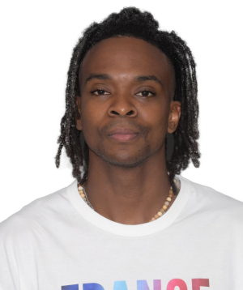
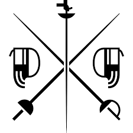

LEFORT Enzo
France
Escrime
Date de Naissance : 29sept. 1991
Âge : 33
Sexe : Homme
Fonction : Athlète
Biographie du Sportif
DES CARAÏBES À L'EUROPE
Il est né en Guyane française, une région d'outre-mer de la France située dans les Caraïbes, de parents originaires de la Guadeloupe. La famille s'est installée à Gourbeyre, en
Guadeloupe, lorsqu'il avait trois ans. Adolescent talentueux, il s'est vu offrir la possibilité de rejoindre la France métropolitaine pour intégrer le pôle national d'entraînement (Pole France) à
Chatenay-Malabry. En 2010, il a intégré l'Institut national du sport, de l'expertise et de la performance (INSEP) à Paris.
AUTRES ACTIVITÉS
Il intègre l'armée de l'air française dans le cadre du programme « Armée de champions » destiné aux sportifs de haut niveau.
PHOTOGRAPHIE
Se passionne pour la photographie après avoir rencontré de nombreux photographes et producteurs au cours de sa carrière. En 2020, il publie un livre - Behind the Mask - qui porte sur
la diversité de l'équipe de France d'escrime. « Ce projet est né de l'envie de faire un hommage à la diversité qu'il y a au sein de l'équipe. Depuis que je l'ai rejointe, j'ai été entourée de
personnes d'origines différentes. Et grandir à côté de ces personnes m'a permis de me sensibiliser à des cultures et des points de vue différents. Je ne serais pas l'homme que je suis
aujourd'hui si je n'avais pas connu cette diversité. La photographie m'aide à exprimer mon côté créatif en dehors de l'escrime. (myInfo)
MÉDIA
Outre son travail de photographe, il a publié deux bandes dessinées manga intitulées « Enzo » en 2022, dans lesquelles il raconte sa vie. Il anime un podcast intitulé « Le Rebond », dans
lequel il s'entretient avec des athlètes qui ont relevé des défis.
Il est né en Guyane française, une région d'outre-mer de la France située dans les Caraïbes, de parents originaires de la Guadeloupe. La famille s'est installée à Gourbeyre, en
Guadeloupe, lorsqu'il avait trois ans. Adolescent talentueux, il s'est vu offrir la possibilité de rejoindre la France métropolitaine pour intégrer le pôle national d'entraînement (Pole France) à
Chatenay-Malabry. En 2010, il a intégré l'Institut national du sport, de l'expertise et de la performance (INSEP) à Paris.
ÉPREUVES ET MÉDAILLES
| Discipline | Epreuve | Place | Médaille |
|---|---|---|---|
| Fleuret par équipes - hommes | 3 | ||
| Fleuret individuel - hommes | 6 |
Programme
| Heure de début | Lieu | Discipline | Épreuve | Score | |
|---|---|---|---|---|---|
| 29 juil. 12:05 | GrandPalais - Piste Jaune | Escrime | Fleuret individuel hommes, tableau de 32 | Yi-Tung VS LEFORT Enzo | 12 - 15 |
| 29 juil. 14:55 | GrandPalais - Piste Jaune | Escrime | Fleuret individuel hommes, tableau de 16 | MEINHARDT Gerek VS LEFORT Enzo | 10 - 15 |
| 29 juil. 16:02 | GrandPalais - Piste Jaune | Escrime | Fleuret individuel hommes, tableau de 8 | CHEUNG Ka Long VS LEFORT Enzo | 15 - 14 |
| 4 août 11:50 | GrandPalais - Piste Jaune | Escrime | Fleuret par équipes hommes, tableau de 8 | CHINE VS France | 35 - 45 |
| 4 août 14:50 | GrandPalais - Piste Bleu | Escrime | Fleuret par équipes hommes, demi-finale 1 | Japon VS France | 45 - 37 |
| 4 août 19:02 | GrandPalais - Piste Podium | Escrime | Fleuret par équipes hommes, bronze match | USA VS France | 32 - 45 |
Palmarès Sportif
| RANK | Evénement | Année | Lieu |
|---|---|---|---|
| 1 | Fleuret par équipes hommes | 2021 | Tokyo, JPN |
| 2 | Fleuret par équipes hommes | 2016 | Rio de Janeiro, BRA |
| 5 | Fleuret par individuel hommes | 2021 | Tokyo, JPN |
| 8 | Fleuret par équipes hommes | 2012 | London, GBR |
| 22 | Fleuret individuel hommes | 2012 | London, GBR |
| 24 | Fleuret individuel hommes | 2016 | Rio de Janeiro, BRA |
| RANK | Evénement | Année | Lieu |
|---|---|---|---|
| 1 | Fleuret par équipes hommes | 2022 | Le Caire , EGY |
| 1 | Fleuret par équipes hommes | 2019 | Budapest , HUN |
| 1 | Fleuret par équipes hommes | 2014 | Kazan , RUS |
| 2 | Fleuret par équipes hommes | 2019 | Budapest , HUN |
| 3 | Fleuret individuel hommes | 2023 | Milan , ITA |
| 3 | Fleuret par équipes hommes | 2022 | Le Caire , EGY |
| 3 | Fleuret par équipes hommes | 2017 | Leipzig , GER |
| 3 | Fleuret individuel hommes | 2014 | Kazan , RUS |
| 3 | Fleuret par équipes hommes | 2013 | Budapest , HUN |
| 4 | Fleuret par équipes hommes | 2015 | Moscow , RUS |
| 5 | Fleuret par équipes hommes | 2018 | Wuxi , CHN |
| 6 | Fleuret équipes hommes | 2023 | Milan , ITA |
| 7 | Fleuret individuel hommes | 2018 | Wuxi , CHN |
| 12 | Fleuret individuel hommes | 2017 | Leipzig , GER |
| 19 | Fleuret individuel hommes | 2019 | Moscow , RUS |
En Savoir Plus
Hobbies
La photographie , la mode et les comics
Famille
Femme : Kitesy
Ambitions
Remporter l'or individuel et par équipe aux Jeux olympiques de 2024 à Paris et participer aux Jeux olympiques de 2028 à Los Angeles.
Souvenir le plus fort
Sa victoire en équipe lors des JO Tokyo 2021
Son parcours scolaire
Études de kinésiologie à l'École nationale de kinésithérapie et de rééducation (ENKRE) de Saint-Maurice (FRA).
Surnom
ZOZO
Ces occupations
Athletisme et La Photographie
Langues parlées
Français et Anglais
Le nom de son club
Cercle d’Escrime Melun Val de Seine (Paris, France).
Son coach
Nationales : Emeric Clos (France)
Main
Droitier
Blessures
Juin 2022 : blessure au mollet, manque les championnats d'Europe à Antalya, Turquie.
2012 : Blessure au genou gauche.
Débuts
Commence l'escrime à l'âge de cinq ans à Basse-Terre, en Guadeloupe
Raison
Il a été inspiré en regardant à la télévision l'escrimeuse française Laura Flessel-Colovic aux Jeux olympiques d'Atlanta en 1996.
« Le fleuret me convient, car l'objectif et la priorité sont d'attaquer. C'est plus vivant, et je suis plus une escrimeuse active que
tactique, donc c'est une arme qui me convient »